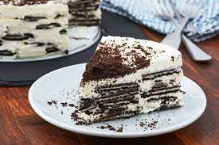

How to make an Ice Box Cake

Description
An easy no bake cake! Made of cookies and ice cream!
Ingredients
- 3 ½ cups very cold heavy whipping cream
- ½ cup powdered sugar
- 1 teaspoon vanilla extract
- ¼ teaspoon salt
- 40 chocolate graham crackers (or more or less, depending on the shape of your dish)
- Optional garnish: sprinkles, grated chocolate, crushed chocolate grahams
Directions
- In a large bowl, use an electric mixer to beat heavy cream, powdered sugar, vanilla and salt until stiff peaks form.
- Spread a very thin layer of the whipped cream in the bottom of a 9 x 13-inch dish.
- Place a layer of the graham crackers or chocolate wafers in the bottom of the dish, breaking them as necessary in order to fit.
- Gently spread ¼ of the whipped cream on top of the crackers. Top with a second layer of crackers and then another layer of whipped cream.
- Repeat the layers until you have used a fourth layer of crackers and the final ¼ of the cream.
- Garnish the cake with crushed chocolate grahams, sprinkles, or grated chocolate.
- Cover loosely and refrigerate for at least 4 hours, or up to overnight.
https://www.tasteofhome.com/recipes/icebox-cake/